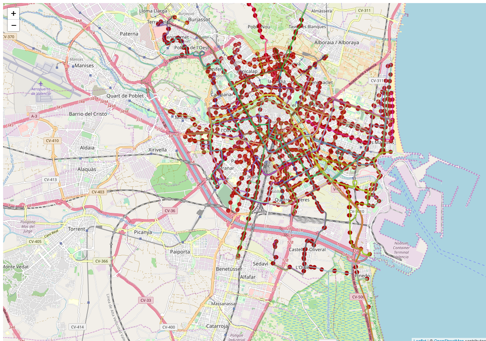

Ejemplo GTFS
¿Qué es la GTFS?
La Especificación general de feeds de transporte público (GTFS) define un formato común para los horarios de transporte público y la información geográfica asociada a ellos. Los "feeds" GTFS permiten que las empresas de transporte público publiquen sus datos de transporte y que los programadores escriban aplicaciones que consuman esos datos de manera interoperable 1.
Creación de un visor que muestre las línes y paradas de un GTFS
Para crear un visor de mapas utilizaremos la librería de mapas Leaflet 2. Y cargaremos los datos de portal de la Plataforma VLCi (Valencia SmartCity) 3
-
Crear una carpeta con el nombre de visor-gtfs.
-
Crear un archivo con el nombre de index.html dentro de la carpeta.
-
Abrir el archivo index.html con un editor de texto y copiar el siguiente código.
1 2 3 4 5 6 7 8 9 10 11 12 13 14 15 16 17 18 19 20 21 22 23 24 25 26 27 28 29 30 31 32 33 34 | <!DOCTYPE html> <html> <head> <meta charset="UTF-8"> <meta name="viewport" content="width=device-width, initial-scale=1.0"> <meta http-equiv="X-UA-Compatible" content="ie=edge"> <title>Ejemplo GTFS</title> <link rel="stylesheet" href="https://unpkg.com/leaflet@1.2.0/dist/leaflet.css" /> <style> #map { height: 100%; width: 100%; position: absolute; } </style> </head> <body> <div id="map"> </div> <script src="https://unpkg.com/leaflet@1.2.0/dist/leaflet.js"></script> <script> var map = L.map('map'); map.setView([39.4652, -0.3861], 13); L.tileLayer('http://{s}.tile.osm.org/{z}/{x}/{y}.png', { attribution: '© <a href="http://osm.org/copyright">OpenStreetMap</a> contributors' }).addTo(map); </script> </body> </html> |
- Abrir el archivo index.html en el navegador para confirmar que se carga un mapa centrado en Valencia.
Crear el proxy
-
Crear un archivo con el nombre de package.json dentro de la carpeta.
-
Abrir el archivo package.json con un editor de texto y copiar el siguiente código.
1 2 3 4 5 6 7 8 9 10 11 12 13 14 15 16 17 18 | { "name": "visor-gtfs", "version": "1.0.0", "description": "", "main": "index.js", "scripts": { "test": "echo \"Error: no test specified\" && exit 1" }, "author": "", "license": "ISC", "dependencies": { "assert": "^1.4.1", "express": "^4.16.2", "fast-csv": "^2.4.1", "request": "^2.83.0", "yauzl": "^2.9.1" } } |
- Instalar Node.js 4. Descargar la última versión LTS (en este momento es la 10.13.0 LTS) y lo instalaremos con las opciones por defecto. Abrir la consola para verificar que se ha instalado correctamente y escribir
1 | node -v |
- Navegar hasta nuestra carpeta visor-gtfs y escribir:
1 | npm install |
Con este comando estamos instalando las dependencias declarades en el archivo package.json
Al ejecutar estos comandos veremos que se crea una carpeta llamada node_modules donde se guardan los módulos instalados.
- Crear un archivo llamado app.js que servirá de proxy con el servicio GTFS. Copiar lo siguiente en este archivo.
1 2 3 4 5 6 7 8 9 10 11 12 13 | var express = require('express'); var app = express(); var request = require('request'); var path = require('path'); var https = require('https'); var fs = require('fs'); var yauzl = require("yauzl"); app.get('/', function(req, res){ res.sendFile(__dirname + '/index.html'); }); app.listen(3000); |
- Probar que nuestro proxy está funcionando, escribir:
1 | node app.js |
-
Escribir en el navegador http://localhost:3000 y ver nuestro mapa.
-
Crear un archivo llamado gtfs2geojson.js. Copiar en el archivo el código del siguiente enlace https://raw.githubusercontent.com/andrewharvey/gtfs2geojson/master/index.js este código convierte datos de un GTFS en un GeoJSON. Código basado en la librería https://github.com/andrewharvey/gtfs2geojson
-
Cargar en archivo en nuestra app.js. Escribir lo siguiente justo despúes de donde se carga el módulo yauzl
1 2 3 4 5 6 7 8 9 10 11 12 13 14 | var express = require('express'); var app = express(); var request = require('request'); var path = require('path'); var https = require('https'); var fs = require('fs'); var yauzl = require("yauzl"); var gtfs2geojson = require('./gtfs2geojson.js'); app.get('/', function(req, res){ res.sendFile(__dirname + '/index.html'); }); app.listen(3000); |
- Crear la variable que contiene la url del servicio GTFS de Líneas, paradas, horarios de autobuses de la EMT de Valencia 5. Escribir lo siguiente justo despues de la variable gtfs2geojson
1 2 3 4 5 6 7 8 9 10 11 12 13 14 15 16 | var express = require('express'); var app = express(); var request = require('request'); var path = require('path'); var https = require('https'); var fs = require('fs'); var yauzl = require("yauzl"); var gtfs2geojson = require('./gtfs2geojson.js'); const url = 'https://opendata.vlci.valencia.es:8443/dataset/4645f8bf-28d7-4420-bab2-d5c5e7de2a5a/resource/11591648-a984-4d64-89e3-3730f3123403/download/googletransit.zip'; app.get('/', function(req, res){ res.sendFile(__dirname + '/index.html'); }); app.listen(3000); |
- Crear una función llamada getZip para descargar un archivo. La función recibe como parámetro una url. Escribir lo siguiente al final del archivo app.js
1 2 3 4 5 6 7 8 9 10 11 12 13 14 15 16 17 18 19 20 21 22 23 24 25 26 27 28 | var express = require('express'); var app = express(); var request = require('request'); var path = require('path'); var https = require('https'); var fs = require('fs'); var yauzl = require("yauzl"); var gtfs2geojson = require('./gtfs2geojson.js'); const url = 'https://opendata.vlci.valencia.es:8443/dataset/4645f8bf-28d7-4420-bab2-d5c5e7de2a5a/resource/11591648-a984-4d64-89e3-3730f3123403/download/googletransit.zip'; app.get('/', function(req, res){ res.sendFile(__dirname + '/index.html'); }); app.listen(3000); function getZip(url){ return new Promise(function (resolve, reject) { var file = fs.createWriteStream("gtfs.zip"); var request = https.get(url, function(response) { response.pipe(file); }); file.on('finish', function(){ resolve(); }); }); } |
- Crear una función que extrae un archivo de un zip. La funcion recibe como parámetro el nombre del archivo que se desea extraer. Escribir lo siguiente al final del archivo app.js
1 2 3 4 5 6 7 8 9 10 11 12 13 14 15 16 17 18 19 20 21 22 23 24 25 26 27 28 29 30 31 32 33 34 35 36 37 38 39 40 41 42 43 44 45 46 47 48 49 50 51 52 53 54 55 56 57 58 59 | var express = require('express'); var app = express(); var request = require('request'); var path = require('path'); var https = require('https'); var fs = require('fs'); var yauzl = require("yauzl"); var gtfs2geojson = require('./gtfs2geojson.js'); const url = 'https://opendata.vlci.valencia.es:8443/dataset/4645f8bf-28d7-4420-bab2-d5c5e7de2a5a/resource/11591648-a984-4d64-89e3-3730f3123403/download/googletransit.zip'; app.get('/', function(req, res){ res.sendFile(__dirname + '/index.html'); }); app.listen(3000); function getZip(url){ return new Promise(function (resolve, reject) { var file = fs.createWriteStream("gtfs.zip"); var request = https.get(url, function(response) { response.pipe(file); }); file.on('finish', function(){ resolve(); }); }); } function leerZip(archivo){ return new Promise(function (resolve, reject) { yauzl.open('gtfs.zip', {lazyEntries: true}, function(err, zipfile) { if (err) throw err; zipfile.readEntry(); zipfile.on("entry", function(entry) { if (/\/$/.test(entry.fileName)) { // Directory file names end with '/'. // Note that entires for directories themselves are optional. // An entry's fileName implicitly requires its parent directories to exist. zipfile.readEntry(); } else { // file entry if(entry.fileName === archivo){ zipfile.openReadStream(entry, function(err, readStream) { if (err) throw err; var file = fs.createWriteStream(entry.fileName); readStream.pipe(file); file.on('finish', function(){ resolve(); }); }); }else{ zipfile.readEntry(); } } }); }); }); } |
- Descargar el archivo GTFS y guardarlo en el ordenador. Escribir lo siguiente justo antes de la línea donde definimos el puerto por el cual escucha nuestro servidor
1 2 3 4 5 6 7 8 9 10 11 12 13 14 15 16 17 18 19 20 21 22 23 24 25 26 27 28 29 30 31 32 33 34 35 36 37 38 39 40 41 42 43 44 45 46 47 48 49 50 51 52 53 54 55 56 57 58 59 60 61 62 63 64 65 66 67 | var express = require('express'); var app = express(); var request = require('request'); var path = require('path'); var https = require('https'); var fs = require('fs'); var yauzl = require("yauzl"); var gtfs2geojson = require('./gtfs2geojson.js'); const url = 'https://opendata.vlci.valencia.es:8443/dataset/4645f8bf-28d7-4420-bab2-d5c5e7de2a5a/resource/11591648-a984-4d64-89e3-3730f3123403/download/googletransit.zip'; app.get('/', function(req, res){ res.sendFile(__dirname + '/index.html'); }); app.all("/getdata/*", function(req, res) { getZip(url).then(function(){ Promise.all([leerZip('shapes.txt'),leerZip('stops.txt')]).then(values => { res.json({"msg": "archivos descargados"}); }); }); }); app.listen(3000); function getZip(url){ return new Promise(function (resolve, reject) { var file = fs.createWriteStream("gtfs.zip"); var request = https.get(url, function(response) { response.pipe(file); }); file.on('finish', function(){ resolve(); }); }); } function leerZip(archivo){ return new Promise(function (resolve, reject) { yauzl.open('gtfs.zip', {lazyEntries: true}, function(err, zipfile) { if (err) throw err; zipfile.readEntry(); zipfile.on("entry", function(entry) { if (/\/$/.test(entry.fileName)) { // Directory file names end with '/'. // Note that entires for directories themselves are optional. // An entry's fileName implicitly requires its parent directories to exist. zipfile.readEntry(); } else { // file entry if(entry.fileName === archivo){ zipfile.openReadStream(entry, function(err, readStream) { if (err) throw err; var file = fs.createWriteStream(entry.fileName); readStream.pipe(file); file.on('finish', function(){ resolve(); }); }); }else{ zipfile.readEntry(); } } }); }); }); } |
-
Reiniciar nuestro servidor de node, ir a la consola y presionar Crtl+c. Escribir node app.js.
-
Abrir la url http://localhost:3000/getdata/ en el navegador para comprobar que se han descargado correctamente los archivos gtfs.zip, shapes.txt y stops.txt.
-
Leer los archivos GTFS y convertirlos a GeoJson. Escribir lo siguiente justo antes de la línea donde definimos el puerto por el cual escucha nuestro servidor
1 2 3 4 5 6 7 8 9 10 11 12 13 14 15 16 17 18 19 20 21 22 23 24 25 26 27 28 29 30 31 32 33 34 35 36 37 38 39 40 41 42 43 44 45 46 47 48 49 50 51 52 53 54 55 56 57 58 59 60 61 62 63 64 65 66 67 68 69 70 71 72 73 74 75 76 77 78 79 | var express = require('express'); var app = express(); var request = require('request'); var path = require('path'); var https = require('https'); var fs = require('fs'); var yauzl = require("yauzl"); var gtfs2geojson = require('./gtfs2geojson.js'); const url = 'https://opendata.vlci.valencia.es:8443/dataset/4645f8bf-28d7-4420-bab2-d5c5e7de2a5a/resource/11591648-a984-4d64-89e3-3730f3123403/download/googletransit.zip'; app.get('/', function(req, res){ res.sendFile(__dirname + '/index.html'); }); app.all("/getdata/*", function(req, res) { getZip(url).then(function(){ Promise.all([leerZip('shapes.txt'),leerZip('stops.txt')]).then(values => { res.json({"msg": "archivos descargados"}); }); }); }); app.all("/stops/*", function(req, res) { gtfs2geojson.stops(fs.readFileSync('stops.txt', 'utf8'), function(result){ res.json(result); }); }); app.all("/shapes/*", function(req, res) { gtfs2geojson.lines(fs.readFileSync('shapes.txt', 'utf8'), function(result){ res.json(result); }); }); app.listen(3000); function getZip(url){ return new Promise(function (resolve, reject) { var file = fs.createWriteStream("gtfs.zip"); var request = https.get(url, function(response) { response.pipe(file); }); file.on('finish', function(){ resolve(); }); }); } function leerZip(archivo){ return new Promise(function (resolve, reject) { yauzl.open('gtfs.zip', {lazyEntries: true}, function(err, zipfile) { if (err) throw err; zipfile.readEntry(); zipfile.on("entry", function(entry) { if (/\/$/.test(entry.fileName)) { // Directory file names end with '/'. // Note that entires for directories themselves are optional. // An entry's fileName implicitly requires its parent directories to exist. zipfile.readEntry(); } else { // file entry if(entry.fileName === archivo){ zipfile.openReadStream(entry, function(err, readStream) { if (err) throw err; var file = fs.createWriteStream(entry.fileName); readStream.pipe(file); file.on('finish', function(){ resolve(); }); }); }else{ zipfile.readEntry(); } } }); }); }); } |
-
Reiniciar nuestro servidor de node, ir a la consola y presionar Crtl+c. Escribir node app.js.
-
Abrir la url http://localhost:3000/stops/ en el navegador para comprobar que se muestra un GeoJson con la información de las paradas.
Modificar el mapa
- Cargar este JSON en nuestro mapa utilizando un plugin de Leaflet llamado leaflet-ajax 6. Este plugin permite hacer una llamada AJAX a un servicio que retorne un JSON y cargar la respuesta en un mapa. Para cargar este plugin debemos agregar lo siguiente justo después de donde hemos cargado el leaflet
1 2 3 4 5 6 7 8 9 10 11 12 13 14 15 16 17 18 19 20 21 22 23 24 25 26 27 28 29 30 31 32 33 34 35 | <!DOCTYPE html> <html> <head> <meta charset="UTF-8"> <meta name="viewport" content="width=device-width, initial-scale=1.0"> <meta http-equiv="X-UA-Compatible" content="ie=edge"> <title>Ejemplo GTFS</title> <link rel="stylesheet" href="https://unpkg.com/leaflet@1.2.0/dist/leaflet.css" /> <style> #map { height: 100%; width: 100%; position: absolute; } </style> </head> <body> <div id="map"> </div> <script src="https://unpkg.com/leaflet@1.2.0/dist/leaflet.js"></script> <script src="https://calvinmetcalf.github.io/leaflet-ajax/dist/leaflet.ajax.js"></script> <script> var map = L.map('map'); map.setView([39.4652, -0.3861], 13); L.tileLayer('http://{s}.tile.osm.org/{z}/{x}/{y}.png', { attribution: '© <a href="http://osm.org/copyright">OpenStreetMap</a> contributors' }).addTo(map); </script> </body> </html> |
- Utilizar el plugin para agregar la capa de paradas al mapa llamando a nuestro servidor. Agregar lo siguiente al final de nuestro código:
1 2 3 4 5 6 7 8 9 10 11 12 13 14 15 16 17 18 19 20 21 22 23 24 25 26 27 28 29 30 31 32 33 34 35 36 37 38 39 40 41 42 43 44 45 46 47 48 49 50 51 | <!DOCTYPE html> <html> <head> <meta charset="UTF-8"> <meta name="viewport" content="width=device-width, initial-scale=1.0"> <meta http-equiv="X-UA-Compatible" content="ie=edge"> <title>Ejemplo GTFS</title> <link rel="stylesheet" href="https://unpkg.com/leaflet@1.2.0/dist/leaflet.css" /> <style> #map { height: 100%; width: 100%; position: absolute; } </style> </head> <body> <div id="map"> </div> <script src="https://unpkg.com/leaflet@1.2.0/dist/leaflet.js"></script> <script src="https://calvinmetcalf.github.io/leaflet-ajax/dist/leaflet.ajax.js"></script> <script> var map = L.map('map'); map.setView([39.4652, -0.3861], 13); L.tileLayer('http://{s}.tile.osm.org/{z}/{x}/{y}.png', { attribution: '© <a href="http://osm.org/copyright">OpenStreetMap</a> contributors' }).addTo(map); var geojsonParadas = new L.GeoJSON.AJAX('/stops/',{ pointToLayer: function (feature, latlng) { return new L.CircleMarker(latlng, { radius: 5, fillColor: "#A30000", color: "#A30000", weight: 1, opacity: 1, fillOpacity: 0.8 }); }, onEachFeature: function (feature, layer) { layer.bindPopup(feature.properties.stop_name); } }).addTo(map); </script> </body> </html> |
-
Recargar el mapa y comprobar que aparecen los puntos de las paradas en el mapa.
-
Utilizar el plugin para agregar la capa de líneas al mapa llamando a nuestro servidor. Agregar lo siguiente al final de nuestro código:
1 2 3 4 5 6 7 8 9 10 11 12 13 14 15 16 17 18 19 20 21 22 23 24 25 26 27 28 29 30 31 32 33 34 35 36 37 38 39 40 41 42 43 44 45 46 47 48 49 50 51 52 53 54 55 | <!DOCTYPE html> <html> <head> <meta charset="UTF-8"> <meta name="viewport" content="width=device-width, initial-scale=1.0"> <meta http-equiv="X-UA-Compatible" content="ie=edge"> <title>Ejemplo GTFS</title> <link rel="stylesheet" href="https://unpkg.com/leaflet@1.2.0/dist/leaflet.css" /> <style> #map { height: 100%; width: 100%; position: absolute; } </style> </head> <body> <div id="map"> </div> <script src="https://unpkg.com/leaflet@1.2.0/dist/leaflet.js"></script> <script src="https://calvinmetcalf.github.io/leaflet-ajax/dist/leaflet.ajax.js"></script> <script> var map = L.map('map'); map.setView([39.4652, -0.3861], 13); L.tileLayer('http://{s}.tile.osm.org/{z}/{x}/{y}.png', { attribution: '© <a href="http://osm.org/copyright">OpenStreetMap</a> contributors' }).addTo(map); var geojsonParadas = new L.GeoJSON.AJAX('/stops/',{ pointToLayer: function (feature, latlng) { return new L.CircleMarker(latlng, { radius: 5, fillColor: "#A30000", color: "#A30000", weight: 1, opacity: 1, fillOpacity: 0.8 }); }, onEachFeature: function (feature, layer) { layer.bindPopup(feature.properties.stop_name); } }).addTo(map); var geojsonLineas = new L.GeoJSON.AJAX('/shapes/',{ }).addTo(map); </script> </body> </html> |
-
Recargar el mapa y comprobar que aparecen las líneas del bus en el mapa.
-
Cargar la librería de manipulación de colores chroma.js 7. Escribir lo siguiente después de donde cargarmos el plugin de leaflet.ajax
1 2 3 4 5 6 7 8 9 10 11 12 13 14 15 16 17 18 19 20 21 22 23 24 25 26 27 28 29 30 31 32 33 34 35 36 37 38 39 40 41 42 43 44 45 46 47 48 49 50 51 52 53 54 55 56 | <!DOCTYPE html> <html> <head> <meta charset="UTF-8"> <meta name="viewport" content="width=device-width, initial-scale=1.0"> <meta http-equiv="X-UA-Compatible" content="ie=edge"> <title>Ejemplo GTFS</title> <link rel="stylesheet" href="https://unpkg.com/leaflet@1.2.0/dist/leaflet.css" /> <style> #map { height: 100%; width: 100%; position: absolute; } </style> </head> <body> <div id="map"> </div> <script src="https://unpkg.com/leaflet@1.2.0/dist/leaflet.js"></script> <script src="https://calvinmetcalf.github.io/leaflet-ajax/dist/leaflet.ajax.js"></script> <script src="https://cdnjs.cloudflare.com/ajax/libs/chroma-js/1.3.5/chroma.min.js"></script> <script> var map = L.map('map'); map.setView([39.4652, -0.3861], 13); L.tileLayer('http://{s}.tile.osm.org/{z}/{x}/{y}.png', { attribution: '© <a href="http://osm.org/copyright">OpenStreetMap</a> contributors' }).addTo(map); var geojsonParadas = new L.GeoJSON.AJAX('/stops/',{ pointToLayer: function (feature, latlng) { return new L.CircleMarker(latlng, { radius: 5, fillColor: "#A30000", color: "#A30000", weight: 1, opacity: 1, fillOpacity: 0.8 }); }, onEachFeature: function (feature, layer) { layer.bindPopup(feature.properties.stop_name); } }).addTo(map); var geojsonLineas = new L.GeoJSON.AJAX('/shapes/',{ }).addTo(map); </script> </body> </html> |
- Dar estilo a la capa de líneas generando un color aleatorio. Escribir lo siguiente en las opciones de la capa geojsonLineas
1 2 3 4 5 6 7 8 9 10 11 12 13 14 15 16 17 18 19 20 21 22 23 24 25 26 27 28 29 30 31 32 33 34 35 36 37 38 39 40 41 42 43 44 45 46 47 48 49 50 51 52 53 54 55 56 57 58 | <!DOCTYPE html> <html> <head> <meta charset="UTF-8"> <meta name="viewport" content="width=device-width, initial-scale=1.0"> <meta http-equiv="X-UA-Compatible" content="ie=edge"> <title>Ejemplo GTFS</title> <link rel="stylesheet" href="https://unpkg.com/leaflet@1.2.0/dist/leaflet.css" /> <style> #map { height: 100%; width: 100%; position: absolute; } </style> </head> <body> <div id="map"> </div> <script src="https://unpkg.com/leaflet@1.2.0/dist/leaflet.js"></script> <script src="https://calvinmetcalf.github.io/leaflet-ajax/dist/leaflet.ajax.js"></script> <script src="https://cdnjs.cloudflare.com/ajax/libs/chroma-js/1.3.5/chroma.min.js"></script> <script> var map = L.map('map'); map.setView([39.4652, -0.3861], 13); L.tileLayer('http://{s}.tile.osm.org/{z}/{x}/{y}.png', { attribution: '© <a href="http://osm.org/copyright">OpenStreetMap</a> contributors' }).addTo(map); var geojsonParadas = new L.GeoJSON.AJAX('/stops/',{ pointToLayer: function (feature, latlng) { return new L.CircleMarker(latlng, { radius: 5, fillColor: "#A30000", color: "#A30000", weight: 1, opacity: 1, fillOpacity: 0.8 }); }, onEachFeature: function (feature, layer) { layer.bindPopup(feature.properties.stop_name); } }).addTo(map); var geojsonLineas = new L.GeoJSON.AJAX('/shapes/',{ style: function(geoJsonFeature){ return {color: chroma.random(), opacity: 0.5}; } }).addTo(map); </script> </body> </html> |
- Recargar el mapa y comprobar que aparecen las líneas del bus en el mapa con colores aleatorios.
 ejemplo gtfs
Ejercicios
-
Mostrar un popup con información de la propiedad shape_id al hacer click en la capa de líneas
-
Cargar datos del gtfs de FGC https://www.fgc.cat/es/opendata/
En el siguiente enlace está el fichero de gtfs https://www.fgc.cat/wp-content/uploads/2018/02/google_transit.zip -
Centrar el mapa en Barcelona